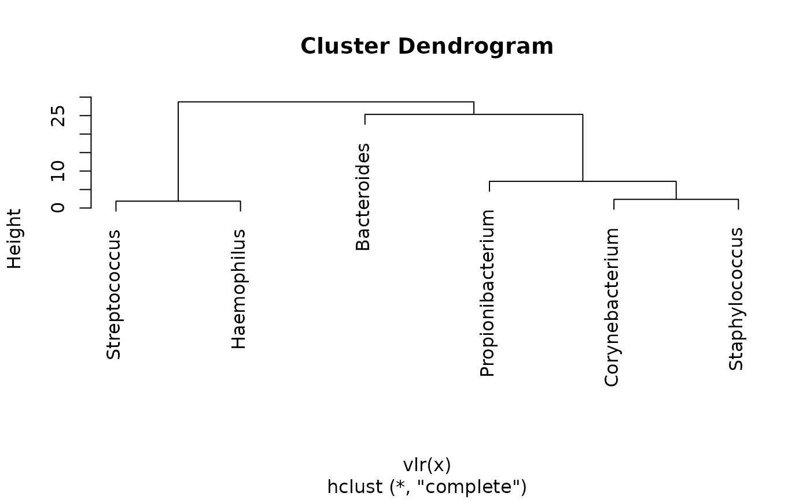

How far each pair of features is from being proportional: the variance,
across samples, of the log of their ratio. 0 means the two features
keep exactly the same ratio in every sample.
Usage
vlr(counts, margin = 1L, pseudocount = NULL, clust = NULL, cpus = n_cpus())Arguments
- counts
A numeric matrix of non-negative abundances (samples \(\times\) features), or any of the objects listed under Input Types. Counts, proportions, and the output of
replace_zeros()are all accepted: each sample's scale cancels out of the log ratios. Pairs are taken between the features (the columns whenmargin = 1), and the variance is over the samples.- margin
The margin containing samples.
1if samples are rows,2if samples are columns. Ignored whencountsis a special object class (e.g.phyloseq). Default:1- pseudocount
Added to every value before taking logs.
NULL(the default) adds nothing whencountshas no zeros, and otherwise uses half the smallest non-zero value, with a warning.0adds nothing, and is an error whencountshas zeros. See Zeros.- clust
Whether and how to cluster the samples (rows and columns) before returning the distance matrix:
NULL(the default) orFALSEto keep them in their input order, or one ofstats::hclust()'s linkage methods,"average"(UPGMA),"complete","single","ward.D","ward.D2","mcquitty"(WPGMA),"median"or"centroid", or"pcoa"to order them along the first axis ofpcoa(). Clustering reorders the samples of the result, with their labels (samples without names are labelled with their positions in the input): itsorderattribute gives each one's position in the input, so thatmeta[attr(d, "order"), ]lines metadata up with them. ecodive's ordinations and tests put the samples back in their input order before analysing them, so give them metadata in its usual order. Other packages see the reordered matrix: give them metadata reordered byorder, or matched by name. The matrix'sdisplaylist keepsclust(FALSEas"none"; see ecodive_display), whichplot.ecodive_dist()follows: withNULLit clusters the samples for the heatmap ("average"), and with"none"it keeps their order.clustneeds every distance, so it cannot be used withpairs.rho_p()'s similarities are clustered as \(1 - \rho_p\).- cpus
How many parallel processing threads should be used. The default,
n_cpus(), will use all logical CPU cores.
Value
A dist object over the features (the packed lower triangle,
as beta_div() returns over samples), labelled with the feature names,
of class c("ecodive_dist", "dist"), so that plot() draws it as a
heatmap (see plot.ecodive_dist()). Besides dist's Size, Labels,
Diag and Upper, it has attributes method ("vlr") and
display, with its title ("Variance of Log Ratios"; see
ecodive_display), as beta_div()'s results do, and with clust,
order.
It is a dissimilarity, so it can be given as dm to pcoa(),
dist_ord() or stats::hclust() to ordinate or cluster the features.
Use as.matrix() for the full \(D \times D\) matrix.
Details
For features \(i\) and \(j\) measured in \(n\) samples,
$$\mathrm{vlr}_{ij} = \mathrm{var}\left(\log\frac{x_i + c}{x_j +
c}\right) = \frac{1}{n - 1} \sum_{s=1}^{n} \left(\ell_{si} - \ell_{sj} -
\overline{\ell_i} + \overline{\ell_j}\right)^2$$
with \(\ell = \log(x + c)\), \(c\) the pseudocount, natural logs, and
the sample variance's divisor \(n - 1\) (scikit-bio's default ddof = 1). It doesn't depend on the samples' totals, nor on any other feature,
and so equally the variance of the difference of the two features' clr
or alr coordinates. It is unbounded and grows with the features' own
variability; rho_p() and phi_s() rescale it.
Why not correlation? Relative abundances are constrained to sum to a constant, so their correlations are not those of the underlying abundances: closure alone induces negative correlations, and the correlation of two taxa changes when a third is dropped from the table (Pearson 1897; Lovell et al. 2015). The ratio of two features is the same whether their abundances are absolute or relative, so a constant ratio (proportionality) is a property of the features themselves, and holds after subsetting.
Results match scikit-bio's pairwise_vlr() (with features as its
columns) and vlr(). scikit-bio computes the variance from a covariance
matrix (\(c_{ii} + c_{jj} - 2c_{ij}\)), which loses precision for
nearly proportional pairs; ecodive sums the differences directly. Its
vlr(robust = TRUE), which leaves out the samples where either feature
is zero (so each pair uses different samples), is not offered.
Zeros
Logs of zero are undefined, so zeros need replacing first. With
pseudocount = NULL (the default), no pseudocount is used when
counts has no zeros; otherwise half the smallest non-zero value is
added to every value, with a warning. The recommended input is a table
with its zeros replaced by replace_zeros(), which has none and is
used as it is.
propr (Quinn et al. 2017) replaces only the zeros, by 1, which is not
pseudocount = 1 (that adds 1 to every value). To reproduce it, write
x[x == 0] <- 1 and then call these functions on x.
Pseudocounts are not neutral: in sparse tables the many zeros, all given the same value, can dominate the variances. Filtering out rare features first helps.
Size
The result has \(D(D - 1)/2\) values: 20,000 features give 2e8 pairs, 1.6 GB. Filter out rare features first for large tables. The table itself stays sparse.
Input Types
The counts parameter is designed to accept a simple numeric matrix, but
seamlessly supports objects from the following biological data packages:
phyloseqrbiomSummarizedExperimentTreeSummarizedExperiment
For large datasets, standard matrix operations may be slow. See
vignette('performance') for details on using optimized formats
(e.g. sparse matrices) and parallel processing.
References
Aitchison, J. (1986). The Statistical Analysis of Compositional Data. Chapman & Hall.
Lovell, D., Pawlowsky-Glahn, V., Egozcue, J. J., Marguerat, S., & Bähler, J. (2015). Proportionality: a valid alternative to correlation for relative data. PLoS Computational Biology, 11, e1004075.
Pearson, K. (1897). Mathematical contributions to the theory of evolution. On a form of spurious correlation which may arise when indices are used in the measurement of organs. Proceedings of the Royal Society of London, 60, 489–498.
See also
rho_p() and phi_s(), scaled versions; log_ratio() and
balance() for one log ratio per sample; replace_zeros().
Examples
# Zeros replaced first
x <- replace_zeros(ex_counts, 'mult')
vlr(x)
#> # A dist: 6 features (lower triangle)
#> # Variance of Log Ratios
#> Streptococcus Bacteroides Corynebacterium Haemophilus
#> Bacteroides 28.7
#> Corynebacterium 8.96 25.3
#> Haemophilus 1.86 23.5 13.2
#> Propionibacterium 24.7 12.7 7.22 25.8
#> Staphylococcus 15.1 22.7 2.35 16.4
#> # … 1 more column: Propionibacterium
#> # Attributes: method
# The same as the variance of each log ratio
var(log(x[, 'Streptococcus'] / x[, 'Bacteroides']))
#> [1] 28.72186
# Cluster the features
plot(hclust(vlr(x)))
